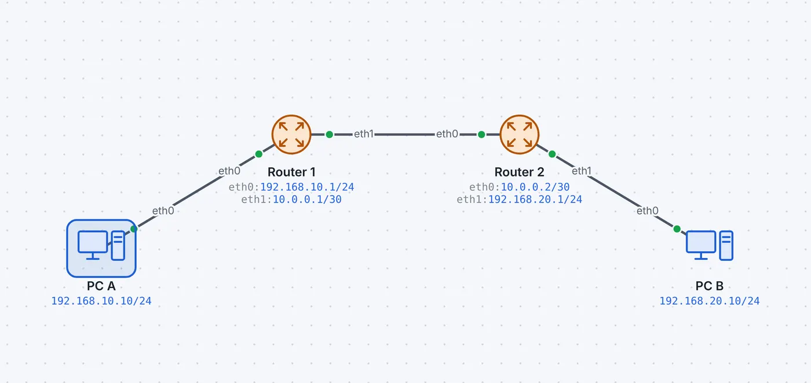
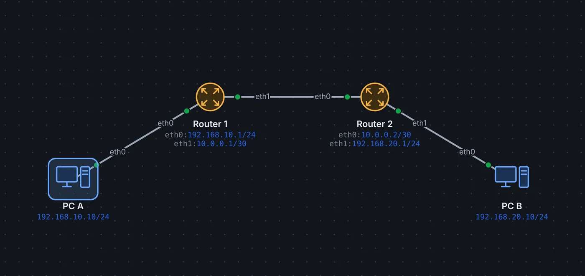

Ein Router verbindet verschiedene Netze. Jeder Anschluss liegt in einem eigenen Netz und hat eine eigene Adresse; diese Adresse ist das Standardgateway der Geräte in diesem Netz. Für jedes Paket entscheidet der Router anhand seiner Routing-Tabelle, wohin es weitergeht (Wie Routing funktioniert). Broadcasts leitet er nicht weiter: Er trennt Broadcast-Domänen.
Zwei Anschlüsse desselben Routers dürfen nicht im selben Netz liegen; leyoNET lehnt das ab wie ein echtes Gerät.
Befehlszeile
Ein Doppelklick auf den Router öffnet in der Simulation die Konsole. Die Befehle folgen dem Stil von FRRouting und Cisco IOS, mit Abkürzungen, ? und Tab:
Router> enable
Router# configure terminal
Router(config)# interface eth0
Router(config-if)# ip address 192.168.1.1/24
Router(config-if)# exit
Router(config)# ip route 0.0.0.0/0 203.0.113.1
Router(config)# do show ip route
Die vollständige Befehlsreferenz steht in der Dokumentation Befehlszeile.
So geht es in leyoNET
Derselbe Text wie in der Hilfe der App (Taste F1).
Router
Verbindet verschiedene Netze. Jede Schnittstelle liegt in einem anderen Netz. Der Router entscheidet anhand der Routingtabelle (Routing), wohin ein Paket geht.
Router, Firewall und Switches lassen sich per Befehlszeile konfigurieren (angelehnt an Cisco IOS und FRRouting). Öffnen: Doppelklick auf das Gerät oder «Befehlszeile» im Fenster. Alles, was du in der CLI einstellst, erscheint auch in den Formularen und umgekehrt.
Bedienung:Tab ergänzt, ? zeigt die Möglichkeiten, ↑/↓ holt frühere Befehle (bleiben bis zum Neuladen erhalten, auch nach dem Wechsel zwischen Entwurf und Simulation). Rechtsklick fügt ein; mehrere Zeilen (z.B. eine ganze show running-config) werden nacheinander ausgeführt. Abkürzungen wie conf t, int g0/0, sh ip ro gehen. Ein Befehl einer anderen Ebene (z.B. interface vlan 10 mitten in router ospf) springt dorthin.
Modi:enable (privilegiert), configure terminal (Konfiguration), interface …, vlan …, router ospf 1, ip dhcp pool …, ip access-list extended …; exit eine Ebene zurück, end ganz hinaus.
`do`: Aus dem Konfigurationsmodus einen Anzeige-Befehl ausführen, ohne hinauszugehen: do show ip interface brief, do ping 192.168.1.1, do write.
Beispiele: - Adresse: interface eth0 → ip address 192.168.1.1 255.255.255.0 → no shutdown - VLAN und Access-Port: vlan 10 → name ENTWICKLUNG → interface port1 → switchport access vlan 10 - Trunk: interface port8 → switchport mode trunk → switchport trunk allowed vlan 10,20 - Router-on-a-Stick: interface eth0.10 → encapsulation dot1q 10 → ip address 192.168.10.1/24 - Layer-3-Switch: ip routing → interface vlan 10 → ip address 192.168.10.1/24 → ip helper-address 192.168.20.200 - Statische Route: ip route 10.0.0.0 255.0.0.0 192.168.1.254 - OSPF: router ospf 1 → network 0.0.0.0 255.255.255.255 area 0 - DHCP-Pool: ip dhcp excluded-address 192.168.10.1 192.168.10.9 → ip dhcp pool VLAN10 → network 192.168.10.0 255.255.255.0 → default-router 192.168.10.1 - ACL: ip access-list extended GAST → permit tcp any host 192.168.1.80 eq 80 → interface port2 → ip access-group GAST in - Port-Channel: interface range port7 - 8 → channel-group 1 mode active - Kontrolle: show running-config, show ip route, show vlan brief, show interfaces trunk, show ip ospf neighbor, show access-lists, show ip dhcp binding, show etherchannel summary
Alle Befehle: Dokumentation docs/cli.md.
Loopback-Interfaces
Ein Loopback ist ein Interface ohne Kabel, das immer aktiv ist. Üblich ist eine /32-Adresse (z.B. 10.255.0.1/32).
Router-ID: OSPF nimmt die höchste Loopback-Adresse, sonst die höchste Interface-Adresse.
OSPF kündigt einen Loopback als Host-Route (/32) an und sendet dort keine Hellos.
Feste Verwaltungsadresse: erreichbar, solange irgendein Weg zum Gerät besteht.
Router, Firewall und Layer-3-Switch; im Reiter Adressen oder auf der Befehlszeile: interface loopback0, ip address 10.255.0.1/32, no interface loopback0.
Beispiel ansehen


Statische Routen
Zwei Router, jeder kennt das entfernte Netz über eine statische Route.
«tracert» zeigt beide Router als Zwischenstationen. Eine Route löschen und erneut versuchen: Zielnetz nicht erreichbar.
In leyoNET unter Werkzeuge → Aufgaben-Katalog. Jede Übung prüft sich selbst.
Weiterlesen
Wie Routing funktioniertStandardgateway, Routing-Tabelle, längstes Präfix und administrative Distanz – und wann man statisch, automatisch oder dynamisch routet.
Statisches RoutingRouten von Hand eintragen: Zielnetz, Maske und Next Hop, Standardroute, Hin- und Rückweg und die häufigsten Fehler.
NAT und PATPrivate Netze ins Internet bringen: Port-Übersetzung (PAT), Portweiterleitung, statisches SNAT und DNAT, 1:1-NAT und CGNAT beim Provider.
Layer-3-SwitchEin Switch, der auch routet: VLAN-Interfaces (SVIs) als Gateways, Routing zwischen VLANs, DHCP-Relay, OSPF und VXLAN.